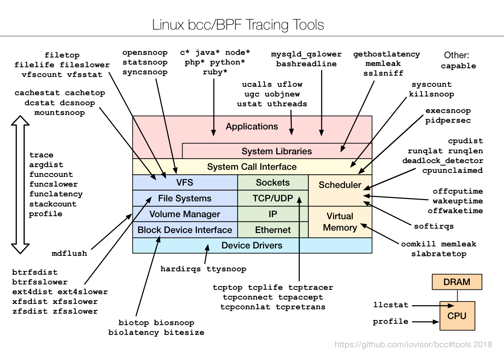

TL;DR — BCC (the BPF Compiler Collection) ships dozens of ready-made eBPF tracing tools — one of the densest diagrams in the set. This chapter organises the whole toolbox by subsystem so it stops being a wall of names: filesystem & VFS, per-filesystem latency, block I/O, applications & language runtimes, syscalls, CPU & scheduler, memory, the deep TCP stack, plus the multi-tool builders (trace, argdist, funccount, stackcount, profile). Each group: what the tools do, which one to grab first, and the database angle. This is the working reference for the eBPF era.
What BCC is
BCC is a toolkit and Python/Lua framework for writing eBPF programs. You mostly won't write any — you'll run the 100+ pre-built command-line tools that ship with it, each a focused tracer for one question: "which files are hottest?" (filetop), "what's the block-I/O latency?" (biolatency), "why is this connection slow?" (tcplife). Under the hood each tool compiles a small eBPF program, loads it into the kernel (verified + JIT-compiled, see our eBPF database post for how that works), aggregates in-kernel, and prints a clean summary.
The reason this diagram is so crowded is that BCC's philosophy is "one sharp tool per question." Rather than one giant program, you get many small ones — which is wonderful once you know the map, and overwhelming until you do. So we'll walk it by subsystem, the same stack as the rest of the series.

The original — "Linux bcc/BPF Tracing Tools" (github.com/iovisor/bcc, 2018). The simplified diagram below walks it box by box.
Fig 1 — The BCC toolbox by subsystem; the left column holds the generic builders that can trace anything.
Install
# Ubuntu/Debian (tools get a -bpfcc suffix)
sudo apt install bpfcc-tools
# RHEL/Fedora
sudo dnf install bcc-tools # tools in /usr/share/bcc/tools
# verify
sudo execsnoop-bpfccNeeds a 4.9+ kernel for most tools (newer is better) and root. On Ubuntu the commands carry a -bpfcc suffix; examples below drop it for brevity — add it on Debian/Ubuntu.
Filesystem & VFS
| Tool | What it shows |
|---|---|
filetop | top for files — most-read/written files live, by process |
filelife | lifespan of short-lived files (created then deleted) |
fileslower | file reads/writes slower than a threshold — fsync/WAL stalls |
vfscount / vfsstat | count / rate of VFS operations |
cachestat / cachetop | page-cache hit/miss rate — is the working set in RAM? |
dcstat / dcsnoop | directory-entry (dcache) hit rate / lookups |
opensnoop / statsnoop / syncsnoop | opens / stats / sync calls as they happen |
mountsnoop | mount/unmount events |
cachestat is the database favourite here: it shows the page-cache hit ratio live. A ratio dropping from 99% to 80% means your hot data no longer fits in RAM and you're hitting disk — the early warning before latency climbs. filetop answers "what's hammering the disk right now?" by file, and fileslower catches the individual slow WAL write (we used it against Postgres in the eBPF post).
cachestat 1 # page-cache hit/miss per second
filetop -C 1 # top files by I/O, refreshed
fileslower 10 # file ops slower than 10 msPer-filesystem latency
The lower-left cluster: a matched *dist + *slower pair per filesystem — ext4, xfs, btrfs, zfs (plus nfs).
| Pattern | What it shows |
|---|---|
ext4slower / xfsslower / btrfsslower / zfsslower | operations slower than a threshold, per filesystem, with process + file |
ext4dist / xfsdist / btrfsdist / zfsdist | operation-latency histogram per filesystem |
These measure at the filesystem layer (above the block device), so they capture the full latency a process feels — including cache misses, lock waits, and journaling — not just raw disk time. ext4slower 10 printing slow postgres writes, paired with a clean biolatency, tells you the slowness is in the filesystem/journal, not the device. The *dist histograms show the shape over time.
ext4slower 10 # ext4 ops > 10 ms (swap ext4 for your FS)
ext4dist 1 5 # ext4 op-latency histogram, 5x1sBlock I/O
The bottom cluster — the storage tools we leaned on in Part 1 and the database post: biolatency (latency histogram, find the tail), biosnoop (per-I/O trace with process/sector/latency), biotop (top for disk I/O by process), bitesize (I/O size distribution). Together they answer the full storage story: how bad (biolatency), who (biotop), which exact I/O (biosnoop), what pattern (bitesize).
biolatency 1 5 # block I/O latency histogram
biotop # top processes by disk I/O
biosnoop # per-I/O traceApplications & language runtimes
The top of the diagram lists language-prefixed tools — c*, java*, node*, php*, python*, ruby* — plus the u* user-statistics family. These trace inside high-level runtimes using USDT probes and uprobes.
| Tool | What it shows |
|---|---|
ucalls | method/function call counts in a runtime (Java, Python, Ruby, …) |
uflow | live method-flow trace (entry/exit, indented) |
ugc | garbage-collection events + duration — GC pauses |
uobjnew | object allocation by type — allocation hotspots |
ustat / uthreads | runtime stats / thread create-destroy events |
mysqld_qslower | MySQL queries slower than a threshold — straight from the engine |
bashreadline | commands typed into bash system-wide (auditing) |
ugc and mysqld_qslower are the standouts. ugc shows JVM/Python/Ruby garbage-collection pauses with timing — the cause of mysterious p99 spikes in managed-runtime services. mysqld_qslower traces slow queries with near-zero overhead from the kernel side, an alternative to the DB's own slow-query log that doesn't touch the database's I/O.
--enable-dtrace) or appropriate symbols. When present they're magical — query and GC visibility without touching the application — but availability varies by how the runtime was packaged.Syscalls & processes
| Tool | What it shows |
|---|---|
syscount | syscall counts by type or process — find the syscall-heavy workload |
execsnoop | new processes — fork storms, short-lived helpers |
killsnoop | signals sent — who killed the process |
pidpersec | rate of new processes per second |
syscount -P (by process) quickly fingers a workload doing a surprising amount of one syscall — a flood of futex means lock contention, a flood of read/write means I/O pressure. execsnoop remains the can't-live-without tool for catching processes top is too slow to see.
CPU & scheduler
| Tool | What it shows |
|---|---|
runqlat | run-queue (scheduler) latency histogram — CPU saturation |
runqlen | run-queue length over time |
cpudist | on-CPU time per task — how long tasks run before yielding |
cpuunclaimed | idle CPU that couldn't be used (imbalance) |
offcputime | where threads block off-CPU and for how long — the other half of latency |
wakeuptime / offwaketime | who woke a blocked thread — chase the waker |
softirqs | time in soft-interrupt handlers (NIC, timers) |
deadlock_detector | potential lock-ordering deadlocks |
The on/off-CPU pairing is the core method: runqlat + profile (below) for on-CPU saturation and where cycles go; offcputime for what threads wait on. A slow request is always one or the other. offwaketime goes deeper — it links the blocked thread to the thread that eventually woke it, untangling lock and IPC chains that are otherwise guesswork.
runqlat 1 5 # scheduler latency — saturation
offcputime -p <PID> 5 # where the process blocks, with stacks
cpudist 1 5 # on-CPU run-time distributionMemory
| Tool | What it shows |
|---|---|
oomkill | traces OOM-killer events — what got killed and why, with context |
memleak | outstanding allocations + their stacks — find leaks |
slabratetop | kernel slab allocation rate by cache — kernel memory churn |
memleak attaches to allocation/free and reports allocations that were never freed, grouped by stack — a live leak detector for a growing process, no recompile. oomkill captures the exact moment the kernel kills a process for memory, with the trigger — invaluable for the "the database just vanished at 3am" incident that turns out to be an OOM.
The deep TCP stack
The network cluster is the richest — BCC has a tool for nearly every TCP event.
| Tool | What it shows |
|---|---|
tcptop | top for TCP — throughput by connection/process |
tcplife | each connection's lifespan + bytes — spot short-lived thrash (add pooling) |
tcpconnect / tcpaccept | new outbound / inbound connections |
tcpconnlat | connection establishment latency — slow handshakes |
tcpretrans | retransmits with addresses + state — packet loss on live connections |
tcptracer | trace connect/accept/close events together |
tcplife is the one to reach for first in service debugging: one line per connection with duration and bytes. A flood of sub-millisecond connections means no pooling — every request pays a full TCP+TLS setup, and the fix is a connection pool (PgBouncer, a client pool). tcpconnlat isolates slow connection setup (DNS, SYN backlog, distance), and tcpretrans is the packet-loss detector from Part 1.
tcplife # connection lifespans + bytes
tcpconnlat # connection setup latency
tcpretrans # live retransmits
tcptop # throughput by connectionHardware: cache & interrupts
Bottom-right and edges: llcstat (last-level-cache hit/miss by process via PMCs — who's thrashing the cache), profile (the 99 Hz CPU sampler → flame graphs), hardirqs (time in hard-interrupt handlers), and ttysnoop (mirror a tty's output). llcstat ties to the memory-bound story from Part 1: low LLC hit rate means the workload is starved on memory, and the fix is data layout, not more cores.
The multi-tool builders
Down the left edge sit the generic tools that can trace anything — the ones to learn when no pre-made tool fits your question.
| Tool | What it does |
|---|---|
trace | trace arbitrary functions/tracepoints with custom output — the swiss-army one-off |
argdist | summarise function arguments/return values into histograms or counts |
funccount | count any function/tracepoint hits (wildcards) |
funcslower / funclatency | functions slower than a threshold / latency histogram of a function |
stackcount | count stack traces leading to an event — find the hot path to it |
profile | sample stacks at 99 Hz → flame graphs |
capable | trace security capability checks (the "Other:" tool) — debug permission denials |
These convert "I wonder how often / how slow / from where X happens" into an answer without writing an eBPF program. funclatency do_sys_open gives an instant latency histogram of a kernel function; stackcount on an event shows which code paths trigger it most; argdist can, say, histogram the size argument to tcp_sendmsg. Master these five and you rarely need to drop to writing eBPF by hand — which is exactly where bpftrace (Part 8) takes over.
Hands-on: the eBPF toolbox in action
One tool per question. Each example shows the command (add the -bpfcc suffix on Ubuntu/Debian), real output, and the decision. All need root.
Is the working set in RAM?
sudo cachestat-bpfcc 1 HITS MISSES DIRTIES HITRATIO
48210 120 300 99.75%
41003 8800 210 82.33% <- hit ratio fellRead it: the page-cache hit ratio dropping from 99% to 82% means hot data no longer fits in RAM — the early warning before disk latency shows up. Do this: add RAM, shrink the working set, or raise the DB's cache config before users feel it.
Which slow filesystem op blocked a commit?
sudo ext4slower-bpfcc 10 # ops slower than 10 msTIME COMM PID T BYTES LAT(ms) FILENAME
03:11:02 postgres 1843 S 0 72.4 wal/00000ated
03:11:03 postgres 1850 S 0 88.1 wal/00000atedRead it: slow WAL syncs (T=S) — commits are stalling on fsync. Do this: if biolatency is clean, the slowness is above the device (fsync storm, too-frequent commits); if biolatency has a tail too, it's the storage.
Connection thrash — no pooling
sudo tcplife-bpfccPID COMM LADDR LPORT RADDR RPORT TX_KB RX_KB MS
9012 app 10.0.0.5 51122 10.0.0.9 5432 1 4 0.8
9012 app 10.0.0.5 51123 10.0.0.9 5432 1 4 0.7Read it: hundreds of sub-millisecond connections to Postgres (5432) — every request pays a full TCP+TLS setup. Do this: add a connection pool (PgBouncer / client pool); the MS column collapsing to ~0 confirms no reuse.
The request is slow but CPU is idle — what's it waiting on?
sudo offcputime-bpfcc -p $(pgrep -n myapp) 5 finish_task_switch
...
futex_wait_queue_me
do_futex
- myapp (9012)
3400 ms <- 3.4s blocked on a futex (lock)Read it: the thread spent 3.4s off-CPU blocked on a futex — lock contention, not CPU work. profile would show nothing because it's waiting. Do this: reduce lock scope / contention in that code path. On-CPU (profile) + off-CPU (offcputime) together explain all latency.
A process keeps growing — leak?
sudo memleak-bpfcc -p $(pgrep -n myapp) 30[top allocations not freed, by stack]
4194304 bytes in 64 allocations from:
parse_request+0x1f
handle_conn+0xa2Read it: 4 MB outstanding from parse_request that never gets freed — a real leak with the exact stack. Do this: fix the missing free on that path. No recompile needed to find it.
Why did the database vanish at 3am?
sudo oomkill-bpfcc # leave running; it prints when the OOM killer fires03:02:55 Triggered by PID 5521 ("batch"), OOM kill of PID 1843 ("postgres"), 8GBRead it: a batch job drove the box out of memory and the kernel killed Postgres. Do this: cap the batch job's memory (cgroup limit), and set the DB's OOM score adjust so it's not the first victim.
Takeaways
- One sharp tool per question. BCC's strength and its overwhelm — learn the map by subsystem and the wall of names becomes a toolbox.
- Per-subsystem first picks:
cachestat/filetop(FS),ext4slower(per-FS),biolatency(disk),runqlat+offcputime(CPU),memleak/oomkill(memory),tcplife/tcpconnlat(network). - Runtimes are reachable.
ugc,ucalls,mysqld_qslowertrace inside JVMs/DBs — GC pauses and slow queries without touching the app. - On-CPU + off-CPU = all latency.
profile/runqlatfor busy,offcputime/offwaketimefor waiting. - Learn the five builders (
trace,argdist,funccount,funclatency,stackcount) and you can answer almost anything without writing eBPF.
References
- iovisor/bcc — the toolkit + per-tool docs (source of this diagram).
- BCC tutorial — getting started with the tools.
- Brendan Gregg — eBPF — the bigger picture.
Extra reads
- eBPF for Database Troubleshooting — five of these tools against a live PostgreSQL.
- Part 8 — bpftrace/eBPF Tools — when you need a custom one-liner.
- Part 6 — perf-tools — the ftrace ancestors for old kernels.
Built from Brendan Gregg's "Linux bcc/BPF Tracing Tools" diagram (github.com/iovisor/bcc, 2018). Tool set evolves; some tools are being superseded by libbpf-tool and bpftrace versions. Runtime (u*/language) tools require USDT-enabled builds. Use the -bpfcc suffix on Ubuntu/Debian.